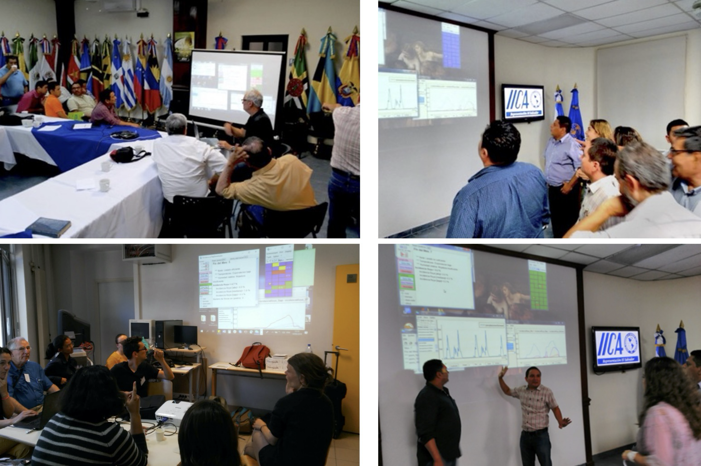
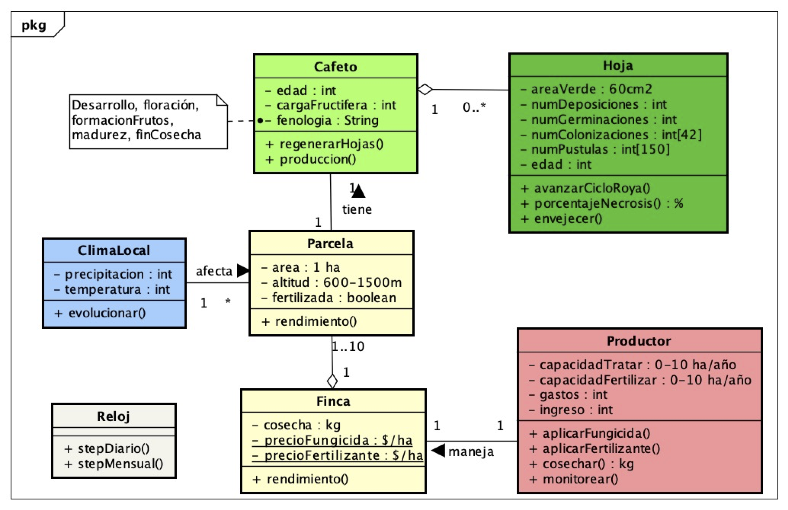
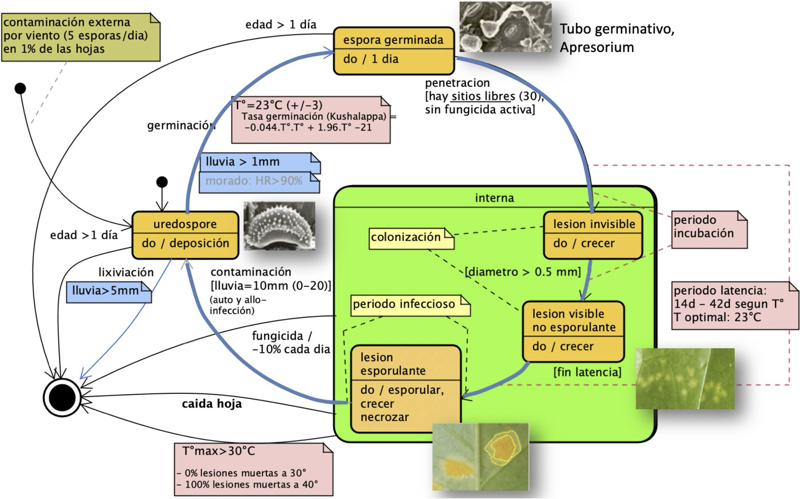

|
MiRoya
Comprendre les mécanismes biophysiques des épidémies
de la rouille du caféier et tester différents moyens de
lutte
Le modèle MiRoya a été développé dans le cadre du projet PROCAGICA,
le Programme centraméricain pour la gestion intégrée de la
rouille du caféier. PROCAGICA a été financé par l'Union
européenne. L'un des volets du programme Procagica
consiste à mettre en place et à renforcer un réseau
régional d'alerte précoce (RRAT) pour la gestion des
risques liés au café à l'échelle de l'Amérique centrale
(un réseau d'institutions SAT-café en Amérique centrale).
Les pays participant à ce réseau sont : le Nicaragua, le
Salvador, le Honduras, le Guatemala, la République
dominicaine, le Panama et le Costa Rica.
Auteurs :
Jacques Avelino, CIRAD - CATIE
Edwin Treminio, CATIE
Pierre Bommel, CIRAD - CATIE
Grégoire Leclerc, CIRAD - CATIE
Natacha Motisi, CIRAD - CATIE
Isabelle Merle, CIRAD - CATIE
Rémi Vezy, CIRAD
Quelques photos d'ateliers utilisant le
simulateur interactif MiRoya :
|
 |
Objectif de MiRoya
Le premier objectif du modèle MiRoya est d'intégrer et de
valider des données scientifiques et des avis d'experts
dans un modèle de simulation, afin de :
- Comprendre les mécanismes biophysiques de la rouille
orangée du caféier
- Hiérarchiser les paramètres qui influencent les
épidémies de rouille
- Partager les connaissances,
- Tester des hypothèses,
- Tester différents moyens de lutte contre la rouille
et
- Consolider un Réseau régional de gestion des risques
liés au café (RR-GRC)
L'objectif de MiRoya est de disposer d'un simulateur
interactif afin de susciter des débats sur les aspects
socio-économiques de la production de café dans un
contexte de crise liée à la rouille. Ce jeu doit
faciliter la coordination des alertes et des mesures au
niveau institutionnel.
Description de MiRoya
Une description du modèle MiRoya est disponible
en espagnol.
Le diagramme de classes UML suivant représente la
structure du modèle. A noter que le champignon (la
rouille) n'est pas représenté en tant qu'entité, mais
seulement sous la forme de quantités en différents états
portées par chaque feuille :

Le schéma ci-dessous présente le cycle de vie de la
rouille, sous la forme d'un diagramme d'états-transitions
UML amélioré :

Ce cycle de vie doit être couplé à celui du caféier, ce qui conduit à des dynamiques complexes.

Diagramme de deux processus couplés : dynamique de
croissance du caféier, et dynamique de propagation de la
rouille orangée
Voir la description complète sur le site de Pergamino.
Installation
Comment installer MiRoya (en
espagnol).
Guide d'utilisation de MiRoya
Guide
également disponible en espagnol.
Vous pouvez télécharger le modèle
sur GitHub
|
|